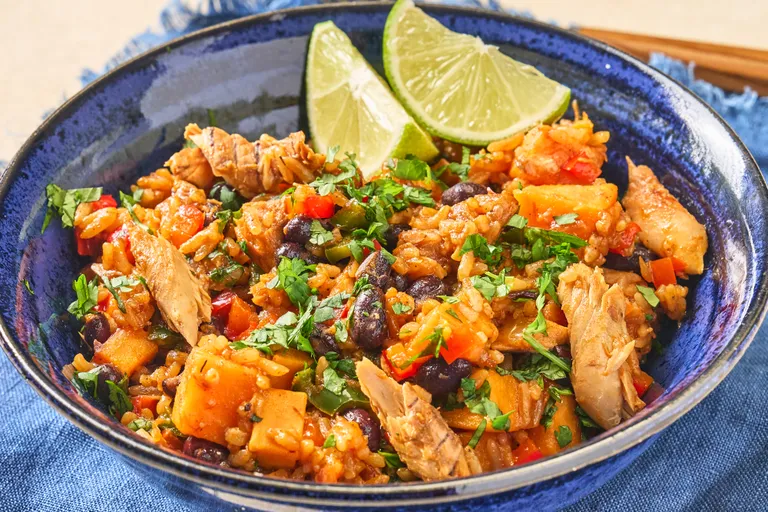

Home
Mexican-Style Fish Dinner Screams Summer

Mexican-style mackerel combines smoky, tomato-packed tinned fish with
Spanish rice, black beans, sweet potatoes, and jalapeño for a quick
one-skillet meal. Finished with fresh lime, cilantro, and a splash of hot
sauce, this quick pantry-friendly dinner delivers vibrant flavor with
minimal effort.
Ingredients
- 2 tablespoons olive oil
- 1/2 cup finely chopped onion
- 1 medium sweet potato, cut into 1/2-inch pieces
- 1/4 teaspoon kosher salt
- 1 medium bell pepper, finely chopped
- 1 medium jalapeño pepper, finely chopped
- 2 (8.8 ounce) packages prepared Spanish style rice
- 1/2 cup water
- 1 (15 ounce) can black beans, drained and rinsed
- 2 (4 ounce) cans mackerel in tomato sauce
- 1 lime, juiced
- 2 tablespoons finely chopped cilantro
- Mexican-style hot sauce, such as Tapatio for serving
Steps
-
Heat oil in a deep skillet over medium heat. Add onions and cook for 1
minute. Add sweet potatoes and salt and cook until lightly browned and
beginning to soften, 3 to 4 minutes. Add bell pepper and cook, stirring
often, until softened, about 2 minutes. Add jalapeño and rice and cook
until rice begins to toast, stirring occasionally, about 2 minutes.
-
Add water and stir, using a wooden spoon to scrape up any bits from the
bottom. Add mackerel with sauce and slightly break up the fish into bite
size pieces. Stir in beans and cook until heated through, about 2
minutes.
-
Sprinkle with lime juice and cilantro and serve with hot sauce if
desired.